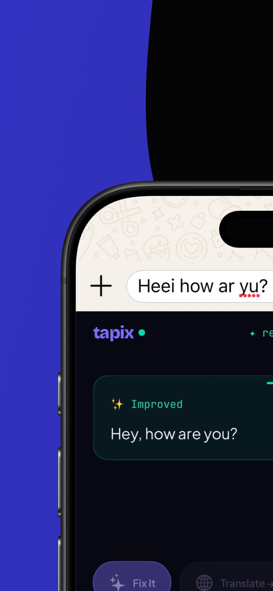
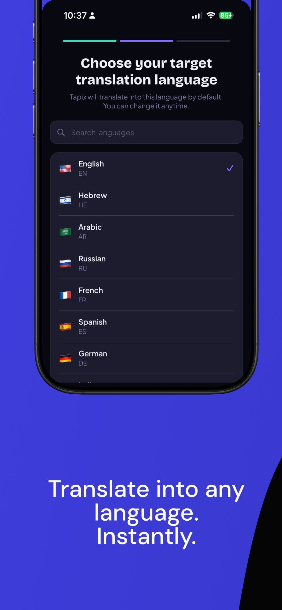
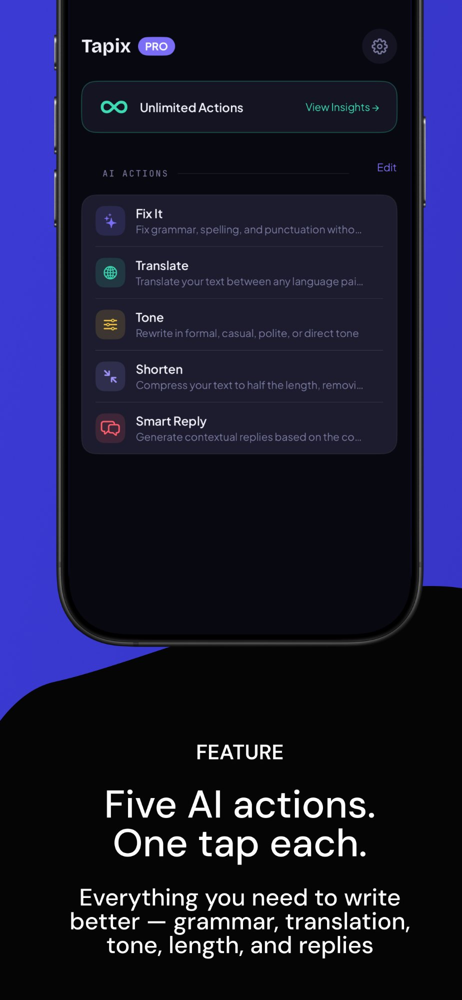

Fix It
Instantly correct grammar, spelling, and punctuation while preserving your voice. One tap, clean text.
Fix grammar, translate 50+ languages, adjust tone, shorten text & get smart replies — inline, in any app. No copy‑paste. No app switching. Just smarter typing.
See It in Action
Fix grammar, translate languages, adjust tone, and shorten messages — all happening live, right inside your keyboard. No app switching, no copy-paste. Just tap an AI action and watch the magic happen inline.
Inline AI
Every fix shows inline right inside WhatsApp, iMessage, or any app. Accept with one tap or keep your original — you're always in control. Tapix shows your improved text with a single "Use" button. No context switching, no clipboard juggling.


Translation
Choose from dozens of languages — English, Hebrew, Arabic, Russian, French, Spanish, German, and more. Tapix translates your text right inside the keyboard, so you can type in your language and send in theirs.
All-in-One
Fix It, Translate, Tone, Shorten, and Smart Reply — everything you need to write better. Grammar, translation, tone, length, and replies — all powered by AI, all inside your keyboard. Customize, reorder, and create your own actions.

AI Keyboard Features
Every feature works inline — iMessage, WhatsApp, email, Instagram, Slack, and every app you type in on iPhone. No app switching required.
Instantly correct grammar, spelling, and punctuation while preserving your voice. One tap, clean text.
Translate into dozens of languages without leaving the conversation. Type in yours, send in theirs.
Shift from casual to professional, friendly to formal, or anything in between. Same message, different energy.
Condense long messages into crisp, clear text. Keep the point, lose the filler — perfect for quick replies.
AI-powered reply suggestions based on conversation context. Choose, customize, and send in seconds.
Text is processed in real-time and never stored, tracked, or shared. Your privacy, by design.
How to Install AI Keyboard
Tapix installs as a native iOS keyboard extension. Enable it once, use it in every app on your iPhone — forever.
Get Tapix free from the App Store. Go to Settings → General → Keyboard → Keyboards → Add New Keyboard → Tapix.
Tap the globe icon on your keyboard to switch to Tapix — in iMessage, WhatsApp, Mail, Instagram, any app.
Type normally, then tap Fix It, Translate, Tone, or Shorten. Text transforms inline — instantly ready to send.
Pricing
15 free AI actions every day — no account, no credit card required.
15 AI actions per day, every day.
Unlimited actions, cancel anytime.
Save 50% — just $2.50/month.
FAQ
Everything you need to know about Tapix.
Tapix is a free AI-powered keyboard extension for iPhone. It fixes grammar and spelling, translates text into 50+ languages, adjusts writing tone, shortens messages, and suggests smart replies — all inline, without leaving the app you're typing in. It works in iMessage, WhatsApp, Instagram, Mail, Slack, and every app on your iPhone.
Download from the App Store, then go to Settings → General → Keyboard → Keyboards → Add New Keyboard and select Tapix. Switch using the globe icon.
Yes. 15 free AI actions every day, no account required. Upgrade to Pro for unlimited at $4.99/month or $29.99/year (save 50%).
Yes. Tapix is a native iOS keyboard extension — it works in every app where you can type. iMessage, WhatsApp, Instagram, Telegram, Twitter/X, Mail, Slack, LinkedIn, Notes, and more.
Absolutely. Tapix is built with privacy at its core. There is no keystroke logging — text is only sent to AI when you explicitly tap an action. No analytics, no ad tracking, no data storage. Your text is never saved after processing.
Tapix supports 50+ languages including Spanish, French, German, Arabic, Hebrew, Chinese, Japanese, Korean, Portuguese, Russian, Italian, Hindi, Turkish, Dutch, Polish, Swedish, and many more. Just select a target language and translate inline with one tap.
Download the free AI keyboard for iPhone. Fix grammar, translate, rewrite & reply — inline, with one tap.